Design Studio 2A / Study collection
Precedents 52
52 architectural projects, with images, drawings and connections to Think, Make, Show.
Mode tags describe the activities a space supports. A precedent can relate to one mode or several; others are included for their architectural relevance.
52 of 52 projects
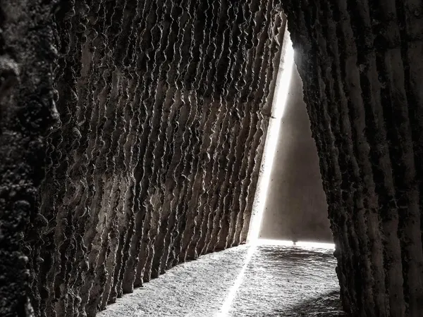
Bruder Klaus Field Chapel
Peter Zumthor
An enclosed chamber for contemplation, with a narrow entrance and an opening to the sky.
Atmosphere · Organisation · Material · Tectonics
View project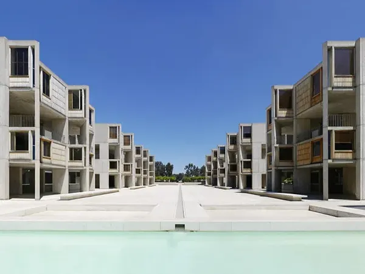
Salk Institute
Louis Kahn
Laboratories and individual studies face a shared courtyard, giving scientific experimentation and quiet thought distinct settings within one research institute.
Structure · Programme · Organisation · Tectonics · Atmosphere
View project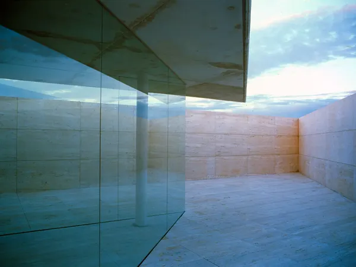
BIT Center
Alberto Campo Baeza
Technology offices sit within an enclosed garden, with glazed workspaces around the edges and an open-air lecture space at the centre.
Form · Material · Tectonics · Organisation · Atmosphere
View project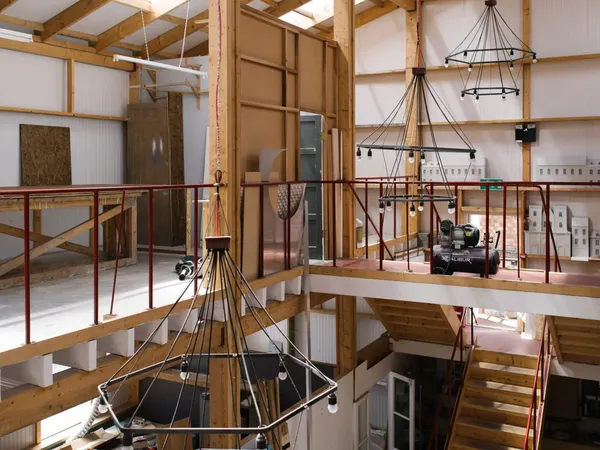
Yardhouse
Assemble
Individual studios open onto a double-height communal space.
Philosophy · Programme · Organisation · Structure · Tectonics
View project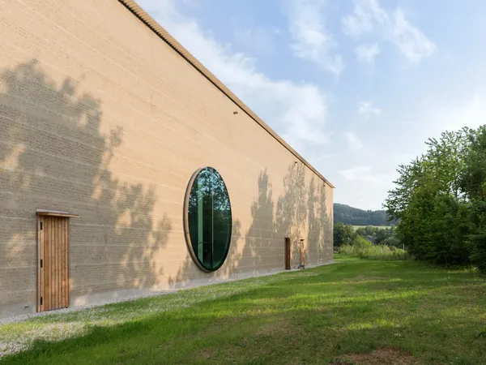
Ricola Kräuterzentrum
Herzog & de Meuron
A herb-processing building with an earth enclosure and a visitor centre.
Programme · Material · Sustainability strategy · Structure · Tectonics
View project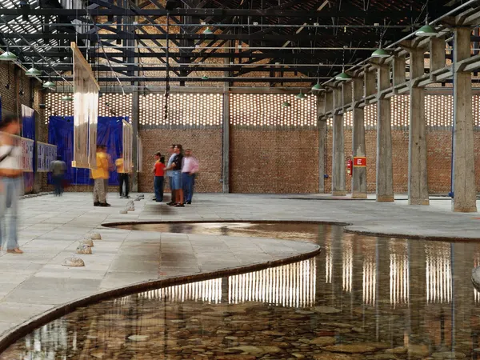
SESC Pompeia
Lina Bo Bardi
A former factory accommodates workshops, reading, exhibitions, performance and leisure.
Philosophy · Programme · Organisation · Sustainability strategy
View project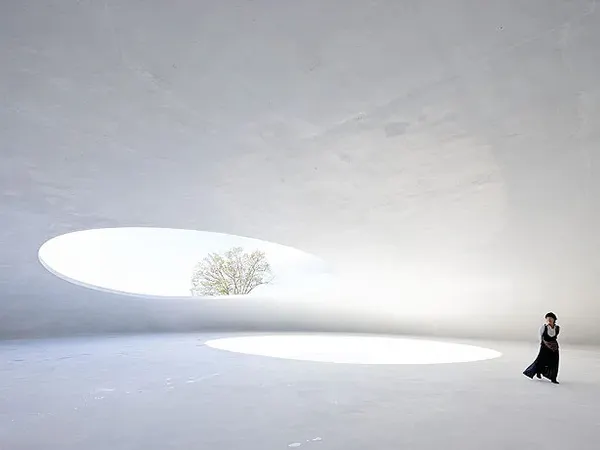
Teshima Art Museum
Ryue Nishizawa · artist Rei Naito
A low concrete shell houses Rei Naito’s water-based artwork.
Form · Structure · Atmosphere
View project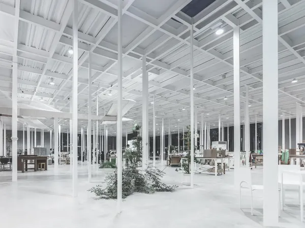
KAIT Workshop
Junya Ishigami
An open student workshop with work areas set among slender columns.
Organisation · Structure · Programme
View project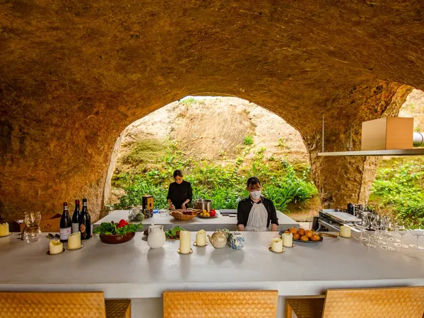
House and Restaurant
Junya Ishigami
A chef's home and restaurant share a cave-like concrete landscape, separated by courtyards but connected through domestic hospitality and everyday use.
Form · Material · Programme · Philosophy · Atmosphere
View project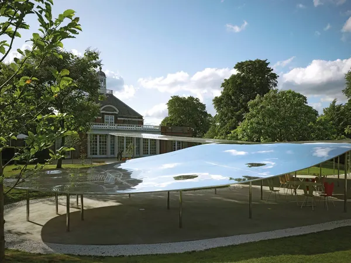
Serpentine Gallery Pavilion 2009
SANAA
A thin reflective roof extends through the park, sheltering gathering and public activities without making a closed room or a single entrance.
Form · Structure · Material · Tectonics · Atmosphere
View project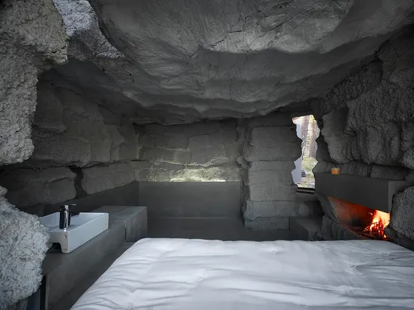
The Truffle
Ensamble Studio
A small retreat enclosed by a rough concrete mass, with a view towards the sea.
Form · Material · Philosophy · Tectonics · Atmosphere
View project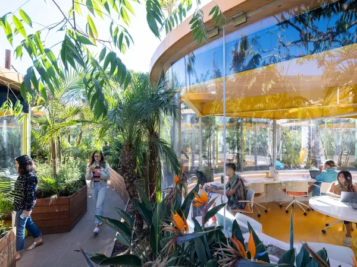
Second Home Hollywood Office
Selgascano
Small offices and meeting rooms are dispersed through a planted garden, combining individual working environments with shared facilities and places to meet.
Programme · Organisation · Sustainability strategy · Atmosphere
View project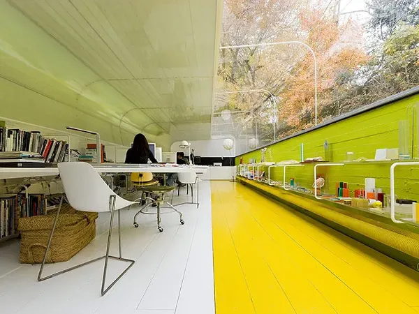
Architecture Office
Selgascano
A small architecture studio is partly buried beneath the trees, placing desks at ground level beside a long transparent edge.
Form · Material · Tectonics · Atmosphere
View project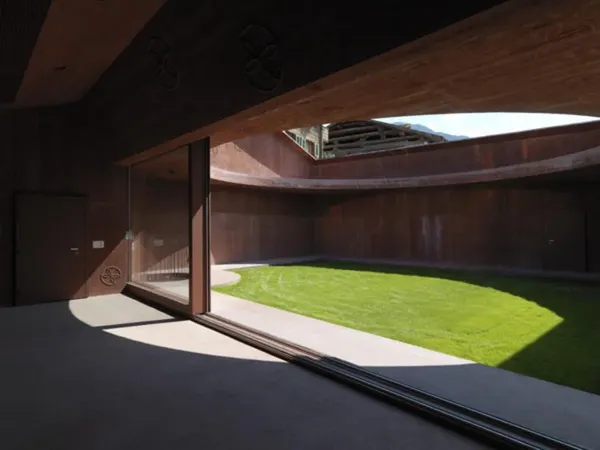
Atelier Bardill
Valerio Olgiati
A working room for musician and writer Linard Bardill opens onto a large courtyard, enclosed within the volume of a former barn.
Form · Material · Programme · Organisation · Atmosphere
View project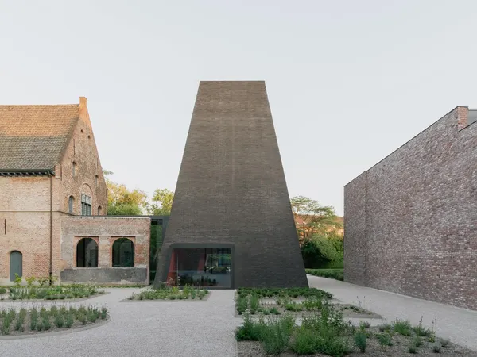
Abby Kortrijk
Barozzi Veiga and TAB Architects
An abbey becomes a museum and public meeting place, bringing exhibitions, artistic experiments and conversation into a sequence of old and new rooms.
Form · Material · Programme · Philosophy · Organisation
View project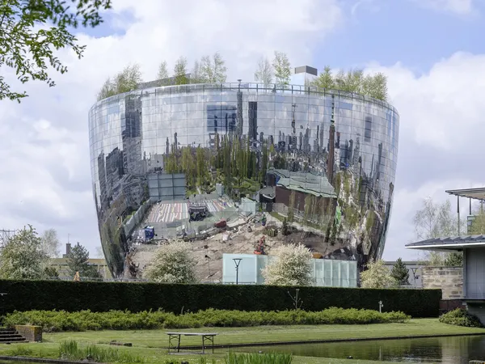
Depot Boijmans Van Beuningen
MVRDV
An art storage building opens its collection and working processes to visitors, combining conservation, public circulation and display around a tall atrium.
Form · Programme · Organisation · Sustainability strategy
View project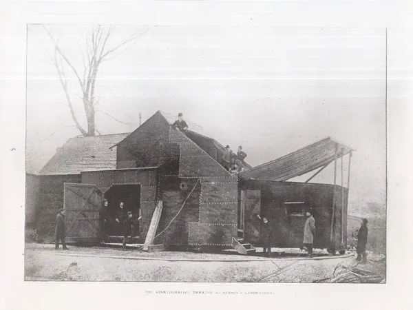
Edison's Black Maria
W. K. L. Dickson / Edison laboratory
An early film studio turns the whole building towards the sun, making a compact working stage dependent on controlled daylight.
Form · Programme · Tectonics · Organisation
View project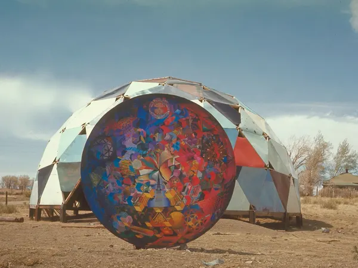
Drop City
Drop City collective
An artists' community combined living and creative work in experimental domes, making shared daily life part of its approach to art.
Structure · Material · Programme · Philosophy · Sustainability strategy
View project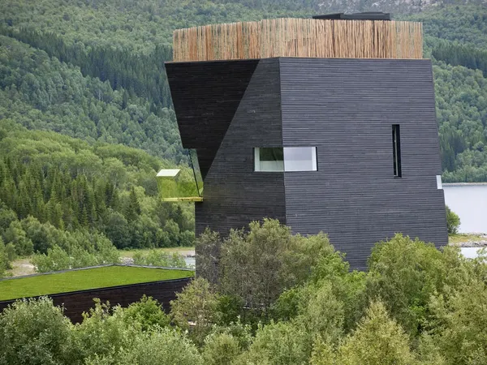
Knut Hamsun Center
Steven Holl Architects + LY Arkitekter
A literary centre brings exhibitions, a library and an auditorium into a compact tower whose unusual spaces draw on the writer's work.
Form · Material · Programme · Philosophy · Atmosphere
View project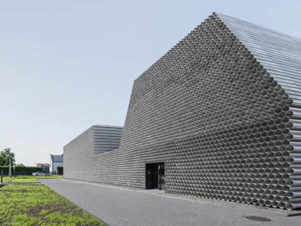
Gambit Office
Robert Konieczny / KWK Promes; Robert Konieczny and Michał Lisiński
Offices and a warehouse share a compact building whose repeated curved profile gives a pipe distributor a recognisable headquarters.
Form · Programme · Organisation · Material
View project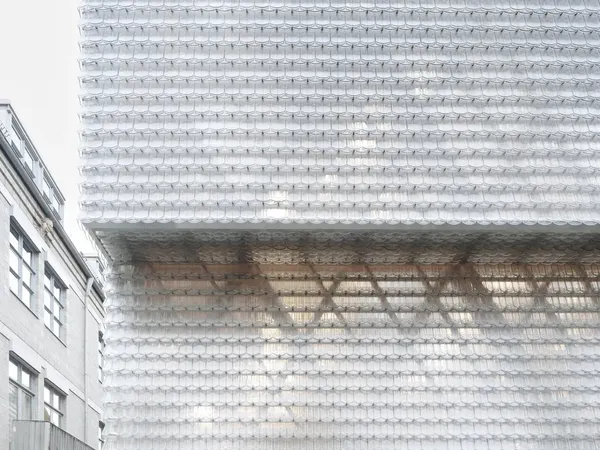
Historical Oberamteistraße Museum
wulf architekten
A glass-clad timber extension supports a historic row of houses while adding accessible circulation and space for small public events.
Structure · Material · Tectonics · Philosophy · Sustainability strategy
View project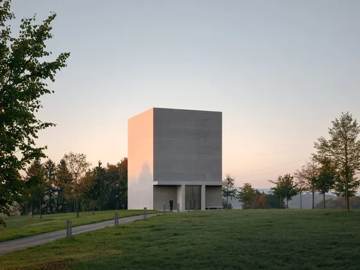
Anselm Kiefer Pavilion
David Chipperfield Architects Berlin
A single exhibition room gives one monumental painting its own setting, with proportions and daylight developed in collaboration with the artist.
Programme · Form · Atmosphere · Material · Sustainability strategy
View project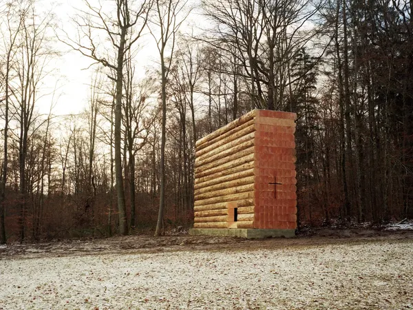
Wooden Chapel
John Pawson
A narrow entrance opens into a tall timber interior, creating a small place for contemplation at the edge of woodland.
Material · Form · Atmosphere · Organisation
View project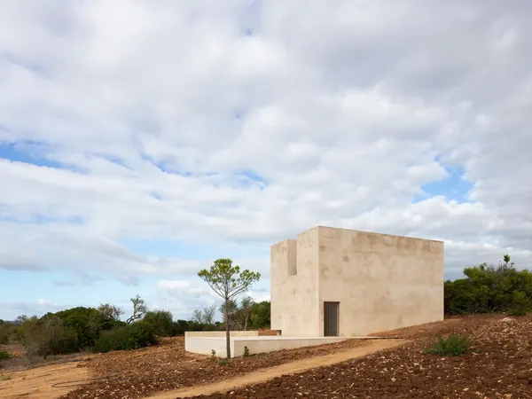
Capela do Monte
Álvaro Siza Vieira
A small hillside chapel reached on foot combines a sheltered courtyard and prayer room within a restrained, pale exterior.
Atmosphere · Organisation · Material · Sustainability strategy
View project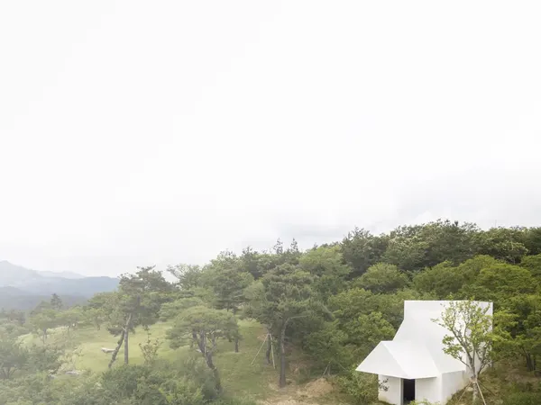
Chapel in Saya Park
Álvaro Siza Vieira and Carlos Castanheira
A concrete chapel tucked into a hillside uses a small opening above to give its compact interior a focused quality of light.
Form · Atmosphere · Philosophy
View project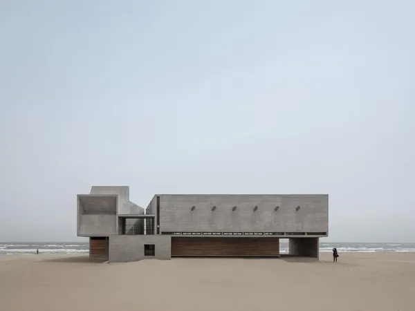
Seashore Library
Vector Architects / Dong Gong
Reading terraces face the sea, while a separate meditation room offers a more enclosed experience of light, sound and solitude.
Organisation · Atmosphere · Material · Form
View project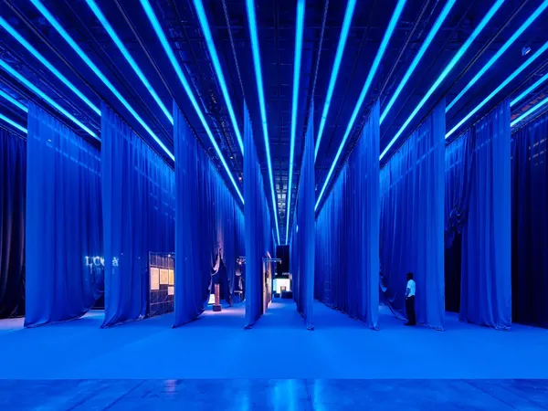
Océano
Studio Animal · Javier J. Iniesta
An exhibition installation organises display within an existing hall.
Organisation · Material · Atmosphere
View project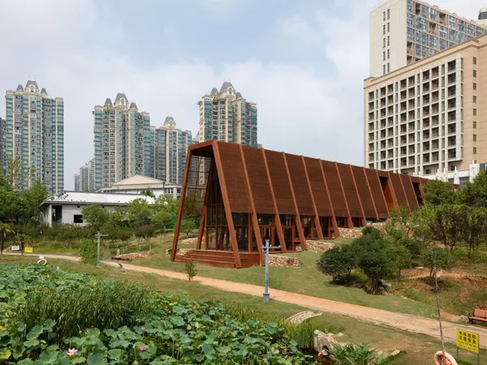
House of Knowledge
Christoph Hesse Architects
A library, exhibition hall and tea house form a community setting around lakes, paths and gardens in an urban park.
Programme · Organisation · Philosophy · Sustainability strategy
View project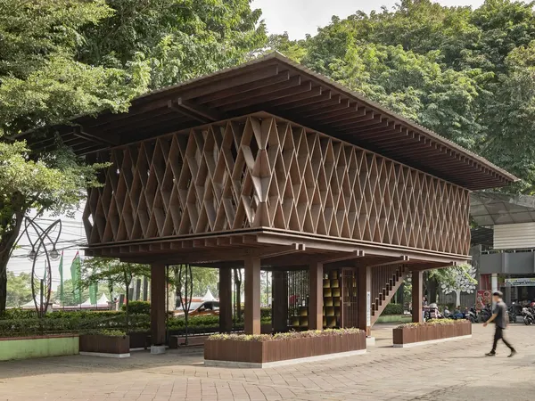
Microlibraries
SHAU / Daliana Suryawinata and Florian Heinzelmann
Small neighbourhood libraries combine reading with shared activities; this collection shows Warak Kayu, Kiaracondong and Bima, each responding to its own setting.
Programme · Organisation · Material · Sustainability strategy
View project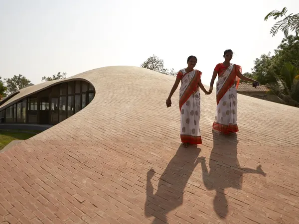
Maya Somaiya Library
sP+a / Sameep Padora and Associates
A low vaulted library sits between school buildings and a boundary, with several entrances and varied places for individual or shared study.
Structure · Form · Philosophy · Organisation · Material
View project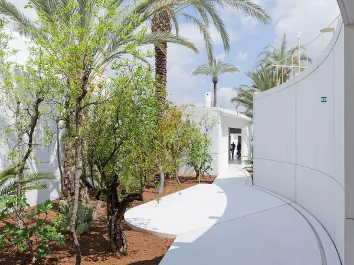
Bahrain Pavilion
Studio Anne Holtrop; landscape architect Anouk Vogel
Fruit gardens and enclosed exhibition rooms form a continuous visitor route presenting Bahrain's agricultural history, culture and relationship with water.
Programme · Organisation · Philosophy · Material · Sustainability strategy
View project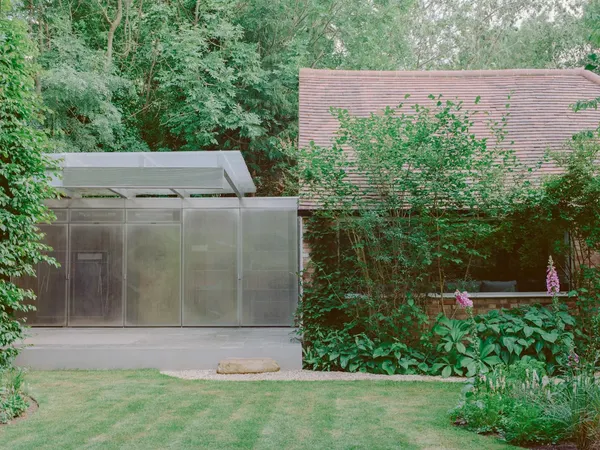
Exeter Road Pavilion
Neiheiser Argyros
A continuous cabinet extends from an adapted garden outbuilding beneath a canopy, combining art, records and books with social space.
Programme · Organisation · Structure · Tectonics · Material
View project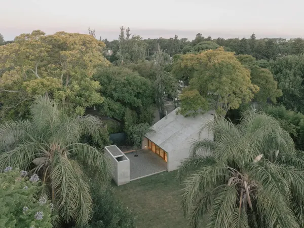
Atelier Workshop
Agustín Berzero
A compact garden workspace combines a heavy concrete exterior with a timber interior, supporting thinking, painting and daily work.
Form · Material · Atmosphere · Organisation
View project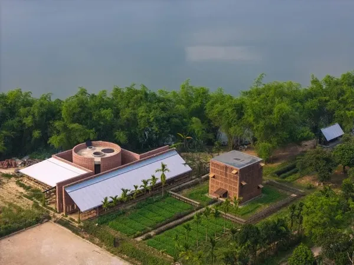
Terra Cotta Workshop
Tropical Space
A working ceramics complex places an existing kiln between craftsmen's workspaces and a visitor route where making can be seen and tried.
Programme · Organisation · Material · Sustainability strategy · Tectonics
View project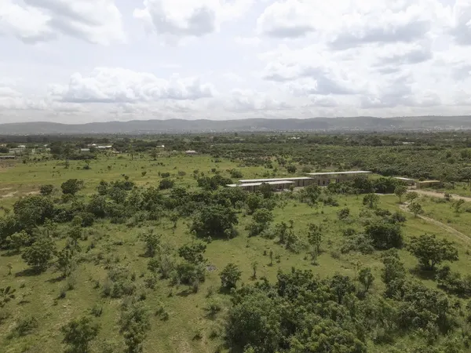
Fair Trade Zone
TAELON7
A production campus for Global Mamas connects textile, skincare and papermaking spaces with gardens, shaded circulation and shared courtyards.
Programme · Organisation · Philosophy · Material · Sustainability strategy
View project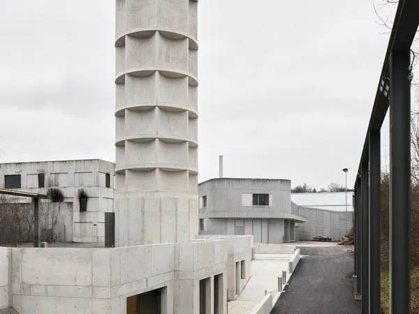
Natural Disaster Simulation Training Centre
Cangemi Architekten
A water-storage tower feeds controlled flood scenarios, turning rooms, ramps and roads into a practical environment for emergency training.
Programme · Structure · Form · Sustainability strategy
View project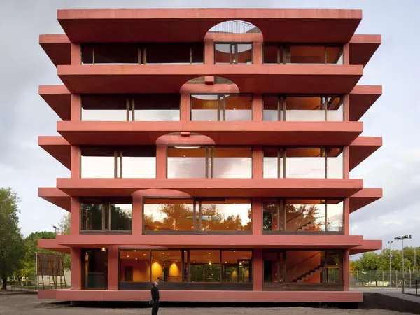
INES Innovation Center
Pezo von Ellrichshausen
A university innovation centre combining collective research, individual work and exhibitions around a sequence of connected circular voids.
Form · Programme · Organisation · Philosophy
View project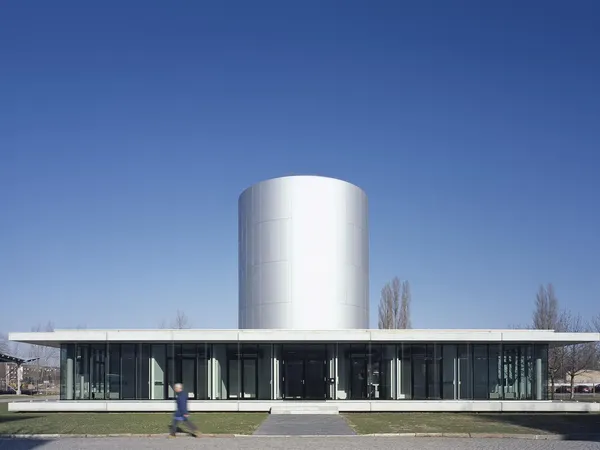
Cloud Laboratory
Schulz und Schulz
A laboratory organised around a tall cloud simulator, with adjoining offices and specialised rooms for studying atmospheric processes.
Form · Programme · Organisation · Structure
View project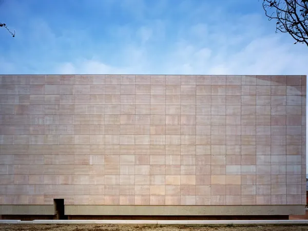
IUAV Materials Testing Laboratory
Francesco Venezia
A university laboratory where material and structural testing is housed within a stone-clad shell illuminated from above and below.
Structure · Material · Organisation · Atmosphere
View project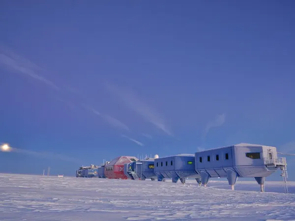
Halley VI Research Station
Hugh Broughton Architects with AECOM
A relocatable Antarctic research station combining scientific work, accommodation and shared social spaces in raised modules on hydraulic legs.
Structure · Programme · Organisation · Tectonics · Sustainability strategy
View project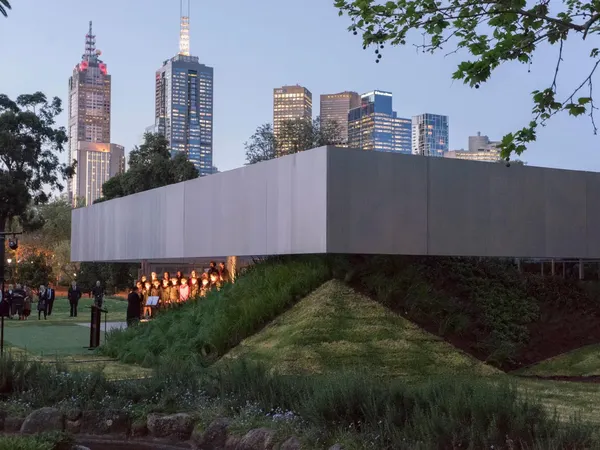
MPavilion
OMA / Rem Koolhaas and David Gianotten
A public pavilion with two opposing grandstands, one of which rotates to change relationships between performers and audience.
Programme · Organisation · Structure · Philosophy
View project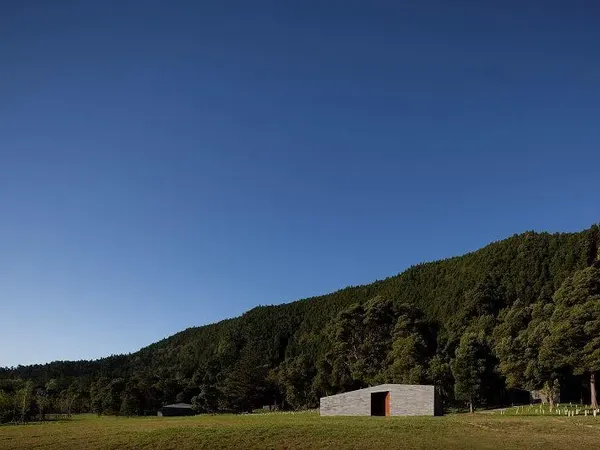
Furnas Monitoring and Investigation Centre
Aires Mateus
A basalt-clad centre beside Furnas Lake, using exhibition and education to connect visitors with the surrounding volcanic landscape.
Form · Material · Organisation · Atmosphere
View project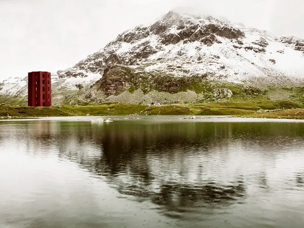
Origen Theatre Tower
Giovanni Netzer; structural design Walter Bieler; construction Uffer / QUADRIN
A temporary timber theatre tower on the Julier Pass, bringing performance and audiences into direct contact with a mountain landscape.
Form · Structure · Programme · Atmosphere
View project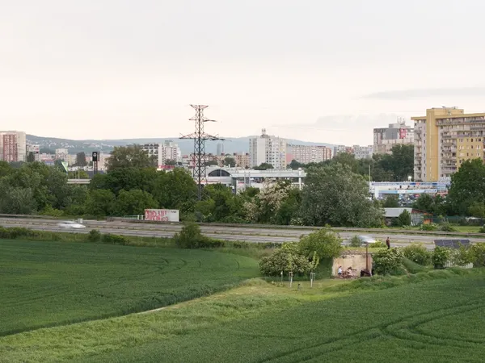
Bunker B-S10
TOITO architekti with Konduktor / Martin Kleibl
A former defensive bunker adapted for overnight stays, retaining its heavy concrete shell and introducing a small sheltered outdoor court.
Programme · Material · Organisation · Sustainability strategy
Architectural reference
View project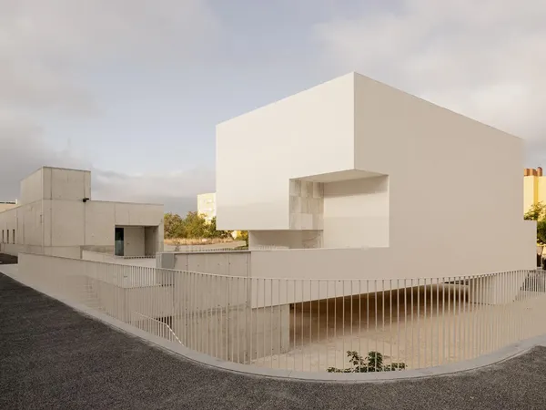
São José da Boavista Church and Parish Centre
Matos Gameiro Arquitectos / Pedro Matos Gameiro and Atelier Bugio / João Favila Menezes
A church and parish centre arranged around a public square, with an elevated worship space sheltering a covered place for gathering.
Programme · Organisation · Form · Philosophy
View project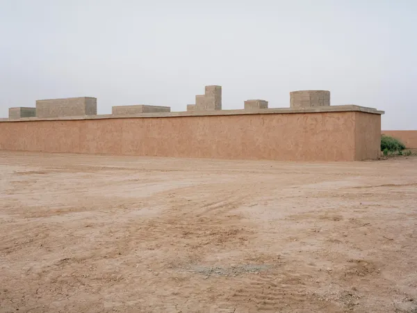
Dar el Farina
Leopold Banchini Architects
A narrow rural house arranged as rooms, patios and water basins between parallel earth walls, following historic irrigation lines.
Organisation · Material · Sustainability strategy · Atmosphere
Architectural reference
View project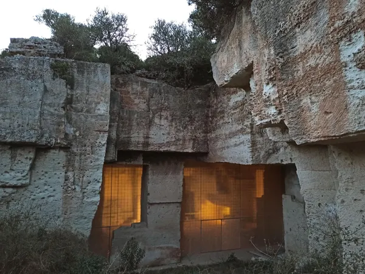
Ca'n Terra
Ensamble Studio / Antón García-Abril and Débora Mesa
An abandoned stone quarry adapted into a house, using existing excavated chambers as the starting point for domestic space.
Philosophy · Material · Organisation · Sustainability strategy · Atmosphere
Architectural reference
View project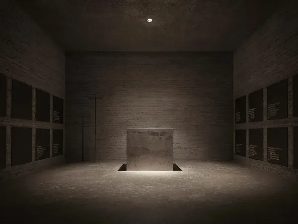
Sülchen Church Burial Vault
Cukrowicz Nachbaur Architekten; rammed earth by Martin Rauch / Lehm Ton Erde
A burial vault beneath an existing church, combining a quiet devotional chamber with access to archaeological remains uncovered during restoration.
Material · Atmosphere · Organisation · Philosophy
View project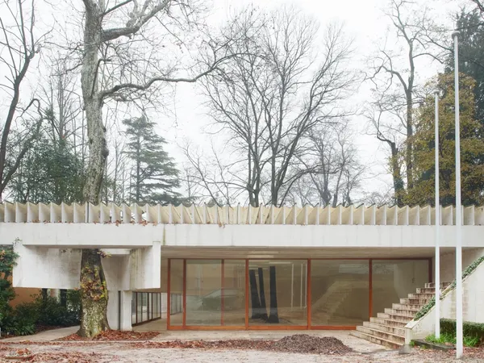
Nordic Pavilion
Sverre Fehn
An exhibition pavilion where a layered concrete roof filters daylight over an open gallery shared by Finland, Norway and Sweden.
Structure · Tectonics · Atmosphere · Programme
View project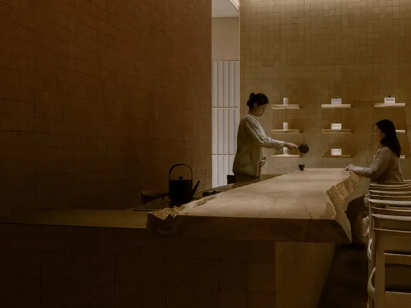
théATRE SHANJUCHAJING Concept Store
kooo architects / Shinya Kojima and Ayaka Kojima
A tea shop combining product display, a communal tasting bar and a secluded tea room within a compact urban interior.
Material · Programme · Organisation · Atmosphere
View projectRooftop Educational Farm
rerum architectes
A school rooftop farm pairing a productive greenhouse with a teaching pavilion, bringing cultivation and environmental learning into everyday education.
Programme · Structure · Sustainability strategy · Tectonics
View projectSikbang Maru
one-aftr
A public pavilion adapting greenhouse bays into distinct settings for gathering, resting and meditation through changes in fabric, light and airflow.
Atmosphere · Material · Programme · Organisation
View project
No matching projects
Try a broader keyword or use Clear filters.
Study focuses indicate possible architectural relevance. Mode tags relate to activities within the space.
Reading a precedent
What to study and extract
Identify the decisions that are relevant to your own project. Extract a principle, relationship or strategy you can adapt, and use drawings or project accounts to explain it. A project may be useful for just one aspect.
01 Form
Volume, proportion, solid and void. Extract a formal relationship or operation.
02 Structure
Support, span and load path. Extract how structure makes space possible.
03 Material
Surface, texture and physical properties. Extract what a material contributes.
04 Programme
People, activities and requirements. Extract compatible uses and useful adjacencies.
05 Philosophy
Ideas about work, life and society. Extract a position and its spatial consequences.
06 Tectonics
Parts, layers and joints. Extract how construction gives the building its expression.
07 Organisation
Routes, thresholds and hierarchy. Extract how spaces connect or remain separate.
08 Sustainability strategy
Climate, resources and reuse. Extract a mechanism and the conditions it depends on.
09 Atmosphere
Light, sound, scale and enclosure. Extract the conditions behind an experience.
Schematic teaching diagrams; these are not drawings of the projects in this collection.
- Record evidenceA drawing, detail or project account.
- Extract a principleThe decision and what it makes possible.
- Adapt to your projectCheck its relevance to your users, site and scale.
Use only what helps your architectural argument. Similar programmes can have different spatial needs; different programmes can share a useful principle.